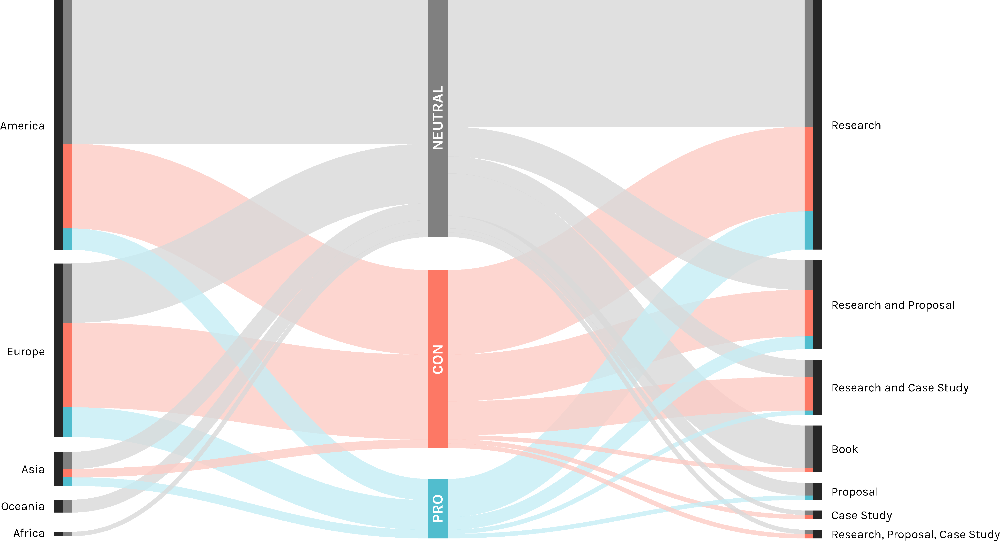

Findings
As the graph shows the number of papers increase in an important way from 2012, one year after the pubblication of the book “The Filter Bubble”. As we can see, papers not only increase in number but also change in position, going from a pro-neutral one to a contrarious-neutral. Particular attention needs the society typology which has a lot of papers in these latest years in opposition to the the oldest years, showing how the debate about the effects of the web personalization on the society is becoming more and more important.

In the first finding we use an alluvial graph to show the continent more involved in the debate and their respective position and the position of the different typology of papers. As wexpected, America has the higher number of paper, followed by Europe, where there is the higher percentage of paper that see some issues involved in the web personalization. On the other side of the graph it’s shown how almost half of the research papers are neutral.
Particular attention must be given to the research and case study papers, where the biggest part is contrarious. This is an important data since these papers have made several experiment about the topic and they tested the real situation different times.
In this graph we can see the different partition of the opinion for every typology. As we can see the first thing to notice is that in privacy the pro position is totally gone, no paper talks about web personalization in a positive way about the privacy. Another interesting fact is that in society and information the contrarious are more than the neutral.
To better understand where the academic debate is leaning, we decided to try to expand the number of analyzed papers. We started from the one that we considered in the last section and we decided to try to map them by starting from the one with a much more defined position in the debate.
The highlighted dots define the papers with most explicit position about our research question, while all the grey dots are all the rest of the papers, connected in relation of how many times they cite themselves. It is possible to see where all these papers are positioned in the debate, like for example we see that there are much more papers in the middle-moderate area.
This chart has been realized with a overall corpus of 3028 papers, obtained from the 63 papers that we initially analyzed from the queries. We created an excel file with two columns, source and target. In the first one we pasted every one of the 63 papers as many times as they were cited on Scholar of Scopus, and in the second column we pasted the citing documents. Once completed this file we opened it in Gephi and we locked on four different positions on the opposite sides the paper with the most radical and moderated opinion about the web personalization. We paid attention to balance their respective weight (in term of connection) in order to avoid mistakes in the forces involved. Then we decided to clear all the nodes that had just one connection with another node (1 degree), rank their dimensions in relation to their degree range and finally let Gephi map all the remaining nodes.
It’s evident that the great number of papers is collocated in the moderated area of the chart, lightly leaning to the PRO section. This is probably due to the fact that there are many papers which belong to the much more technological/neutral category.